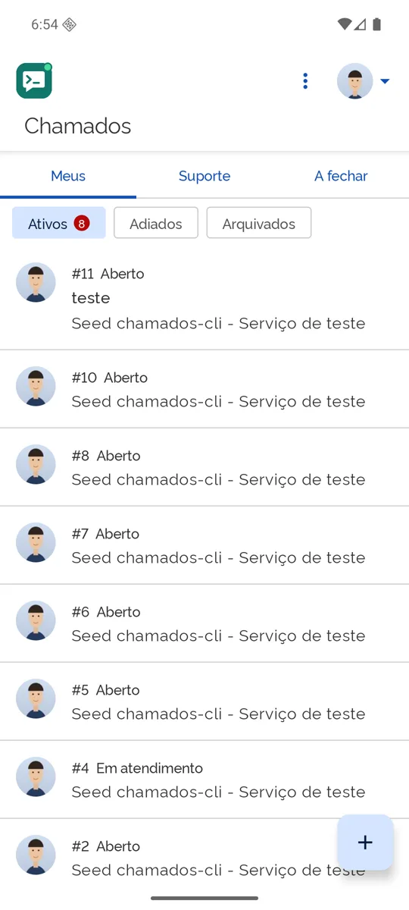
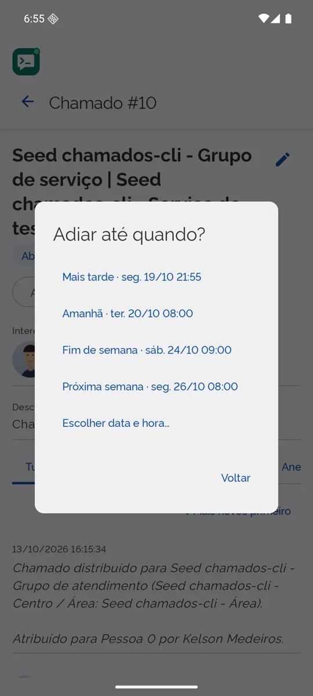

Usar o app
Um guia por tarefa. Clique no que você quer fazer.
- Ver e organizar a lista
- Abrir um chamado
- Ler e atender um chamado
- Dar um título seu
- Arquivar e adiar
- Selecionar vários chamados
- Receber avisos
- Compartilhar do celular para um chamado
- Trocar de conta ou de SUAP
- Escrever com a ajuda da IA
- Documentos de apoio
- Sincronizar com o computador
Ver e organizar a lista
A tela inicial tem três abas: Meus (chamados que você abriu ou em que é interessado), Suporte (a fila de atendimento, com busca no texto) e A fechar (resolvidos que você pode fechar).
Abaixo das abas, os filtros Ativos, Adiados e Arquivados mostram quantos chamados há em cada um. Ao rolar até o fim, o app carrega mais chamados. Puxe a lista para baixo para atualizar.

Abrir um chamado
Toque no botão + da lista, informe o número do serviço, o interessado (alguns serviços exigem) e a descrição, e anexe até 3 arquivos. O app lembra o serviço e o interessado da próxima vez. O SUAP só aceita arquivos xlsx, xls, csv, docx, doc, pdf, jpg, jpeg e png.
Ler e atender um chamado
Toque num chamado para abrir. No alto estão o título, a situação e três menus:
- Ações: o que cabe na situação atual (assumir, iniciar atendimento, comentar, nota interna, anexar arquivo, resolver, suspender, cancelar, reabrir, fechar e avaliar). Cada ação pede confirmação antes de enviar.
- Gestão: atribuir a outro atendente, escalar, devolver, reclassificar, e adicionar ou remover tags e interessados.
- Mais: o que é só seu: arquivar, adiar e exportar o chamado em ZIP.
Mais abaixo, a linha do tempo tem quatro abas: Tudo, Comentários, Notas internas (só para a equipe de atendimento) e Anexos. O botão acima das mensagens troca a ordem (mais novos ou mais antigos primeiro) e o app lembra a sua escolha. Toque num anexo para baixar e abrir.
Dar um título seu
O SUAP não tem título de chamado, mas o app tem. Toque no lápis ao lado do título do chamado, escreva e salve. O título aparece na lista e fica só com você (e no seu outro aparelho, se sincronizar). Para tirar, apague o texto e remova.
Arquivar e adiar
No menu Mais do chamado:
- Arquivar tira o chamado das listas e dos avisos. Ele continua no SUAP; você o vê no filtro Arquivados e pode desarquivar quando quiser.
- Adiar esconde o chamado até a hora escolhida (mais tarde, amanhã, fim de semana, próxima semana ou uma data e hora). Nessa hora ele volta ao topo, marcado com ↩, e o app avisa.
Nada disso muda nada no SUAP: é só a sua organização.

Selecionar vários chamados
Na lista, toque e segure um chamado para começar a selecionar. Toque nos outros para marcar ou desmarcar, ou use Selecionar tudo. A barra no alto oferece: Arquivar (ou Desarquivar), Adiar, Comentar, Nota interna e Tags, para todos de uma vez.
No fim, um resumo mostra quantos deram certo e por que algum falhou; só os que falharam continuam selecionados, para você tentar de novo.

Receber avisos
Em Configurações › Acompanhamento, escolha a lista (Meus ou Suporte) e de quanto em quanto tempo o app confere (15, 30, 60 ou 120 minutos); você pode incluir as mensagens novas. Cada mudança vira uma notificação. O app também avisa quando um chamado adiado volta e quando a sessão expirou. Na tela bloqueada, o conteúdo do chamado não aparece.
O Android pode atrasar os avisos para poupar bateria. Veja “Os avisos não chegam”.
Compartilhar do celular para um chamado
Em qualquer app (galeria, arquivos, navegador, mensagens), use Compartilhar › Chamados com um texto ou arquivos. O app sempre pergunta o que fazer (criar chamado, anexar, comentar, nota interna, resolver, cancelar, reabrir ou suspender) e em qual chamado, mostra um resumo e só envia depois da sua confirmação. Arquivos de tipos que o SUAP não aceita aparecem riscados, com o motivo.
Trocar de conta ou de SUAP
Toque na sua foto (canto superior direito). O menu mostra seu nome, sua matrícula e os perfis. Escolha outro perfil para trocar, ou Cadastrar novo perfil para usar outro endereço do SUAP. Cada perfil tem sessão e dados próprios; trocar não apaga nada. Sair esquece a sessão do perfil.
Escrever com a ajuda da IA
Nos diálogos de texto (comentário, nota interna, resolver, suspender, cancelar, reabrir, fechar e avaliar, escalar e devolver, e o título) há o botão Sugerir com IA. A IA do próprio aparelho lê o chamado aberto e escreve um rascunho; se você já digitou algumas palavras no campo, ela parte delas. Depois do rascunho, use Mais curto, Mais formal ou Refazer, e edite como quiser.
- Nada é enviado sem a sua confirmação: o texto só vai ao SUAP quando você toca em Enviar. Revise sempre: a IA pode errar.
- Fica no aparelho: o chamado não sai do celular para gerar o texto.
- Notas internas não vazam: elas só são lidas pela IA quando o texto também é interno (nota interna, escalar, devolver); nunca num comentário, resolução ou fechamento.
- Sem IA no aparelho? O app coloca um modelo pronto, com
[preencher]onde falta informação, para você completar.
A IA usa o Gemini Nano pelo app AICore do Google, que só existe em aparelhos compatíveis. Veja “A IA não aparece”.
Documentos de apoio
No menu ⋮ (ou em Configurações › Assistente de IA), abra Documentos de apoio e importe PDF, TXT ou Markdown: procedimentos, modelos de resposta, perguntas frequentes. Ao tocar em Sugerir com IA, o app procura nesses documentos os trechos mais úteis para o chamado e os usa como apoio, citando o arquivo e a página; a tela mostra “Documentos de apoio considerados”.
- A indexação é feita em segundo plano, com progresso. Você pode Pausar (ela continua de onde parou), Reindexar ou Remover (apaga o arquivo e tudo o que foi indexado).
- PDF digitalizado (só imagem) não tem texto e o app não faz OCR; PDF protegido por senha não é lido; o limite é de 50 MB e 500 páginas por documento.
- Privacidade: os documentos ficam só no aparelho, em pasta privada do app e fora do backup; nunca vão ao SUAP, à sincronização nem à internet.
Sincronizar com o computador
Para levar seus títulos, arquivos e adiamentos entre o app e o CLI, os dois usam um mesmo espaço de armazenamento (R2 ou S3) cifrado de ponta a ponta. O passo a passo:
- No computador, configure a sincronização e envie os títulos:
chamados sync setup …,chamados sync credentials set,chamados sync key generateechamados sync(veja Usar o CLI). - No computador, rode
chamados sync key pair: ele mostra um QR com a chave e os dados do bucket. - No app, abra o menu ⋮ › Sincronização entre dispositivos e toque em Ler QR (ou cole o texto do pareamento).
- O QR não leva as credenciais do armazenamento: informe a Access Key ID e a Secret Access Key e toque em Guardar credenciais. A sincronização roda sozinha; depois use Sincronizar agora quando quiser.
Se o botão Sincronizar agora estiver cinza, a própria tela diz o que falta (bucket, chave ou credenciais). Não mostre o QR em telas compartilhadas: ele contém a chave.